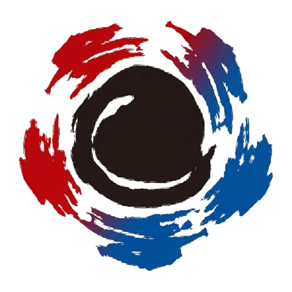

대한민국플라잉디스크연맹
· 대한체육회 인정단체
kfdf60@hanmail.net
| 031-984-3248 |
로그인
·
마이페이지

대한민국플라잉디스크연맹
KOREA FLYING DISC FEDERATION
☰
연맹소개
인사말 · 미션
조직도
정관 · 규정
시도연맹 구성
후원안내
오시는 길
종목소개
얼티미트
디스크골프
원반윷놀이 · 기타 종목
사업안내
2026 유소년 스포츠 기반구축사업
└ 학교체육 강습
└ 방과후 · 늘봄
└ 권역별 유소년 대회
└ 교원연수 · 교재개발
자격증
체육지도자 실기 · 구술 (국가자격)
연맹 자격증 (지도자 · 심판)
이수증 · 자격증 진위확인
지도자·심판
레벨업 (포인트) 시스템
강사 활동 지원 · 지명
강사 가이드 (일지·운영·유의사항)
안전교육 이수
마이페이지
알림마당
연맹 일정 캘린더
공지사항 · 공고
자료실 (서식 다운로드)
자주 묻는 질문
대회
대회 일정 · 안내
대회 참가 신청 (선수)
심판·운영요원 모집
클럽
클럽 찾기 · 가입
클럽 만들기 (클럽장)
내 클럽 · 가입 승인
강습 신청
강사신청
HOME ›
대회
›
경기 기록
경기 기록
출전 오더지로 선수를 고르고 득점·어시스트·제재를 경기 중에 기록합니다. 기록은 결과지 PDF·공개 결과·학교클럽 전적에 그대로 이어집니다.
🧪 시험판 화면입니다 — 새 기록 콘솔(흰 화면 · 경기복 선택 · 주전/후보 끌어 놓기 · 초 단위 시간 · 작전타임·하프타임 타이머)과 순위 규칙·결과 엑셀을 미리 확인하는 곳입니다. 실제 대회 경기에는 아직 쓰지 마세요.
불러오는 중…